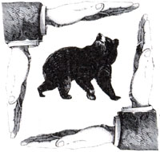

Is the environmental movement getting too cautious? Consider the following:
In west-central Texas, as I mentioned in issue 103, plans are afoot to build the Stacey Dam just below the confluence of the Colorado and Concho rivers. There are many things wrong with the proposal, not the least of which is the fact that, if implemented, it would wreck most of the remaining habitat for the endangered Concho water snake and probably kill most of the snakes outright. In Sacramento, California, the city fathers have given their blessing to a big real estate development on the outskirts of town. The development is in flagrant violation of the city's own master plan, which calls for building in vacant parts of town before reaching out to the fringes. The policy was intended to minimize commuting, cut down on air pollution and preserve agricultural lands. In the northern Rockies surrounding Yellowstone National Park are the last remnants of the noble grizzly bear population in the lower 48. Habitat for some bears is shrinking as people usurp the land for roads, gas wells, ski resorts and logging operations. Yet Montana directly threatens the grizzly-an endangered species-with a hunting season.
Classic environmental problems all, but they have something unexpected in common: The environmental community is ambivalent about what to do.
In Texas, they remember the snail darter. In the mid-'70s, the Tennessee Valley Authority commenced construction of the Tellico Dam on the New River in Tennessee. The dam was a real stinkeroo: It cost more than it could ever hope to return, it destroyed valuable farmland and a lovely stretch of river, and it drove people from land their forebears had lived on for two centuries.
None of the economic or aesthetic arguments against the dam had slowed it down one iota. But then a biologist in waders netted a small fish he later identified as a snail darter. It was, almost by definition, an endangered species, since it was so little known in the area. The researcher then went fishing for a lawyer, the lawyer sued to stop construction of the dam and the court ordered work suspended.
The half-built dam stayed that way for many months as the legal battle raged. Editorial cartoonists took great delight in this David vs. Goliath contest. For the most part, the press heaped ridicule on those who would use a tiny fish to stop something so nearly sacred as a dam. In the end, Congress ordered that the dam be finished.
Opponents of the Stacey Dam don't want the same thing to happen to them, so they're loath to ride the Concho water snake to the courthouse.
Much the same holds true up in grizzly country. In Montana, some environmentalists are nervous about coming out foursquare against the state-sanctioned hunt, for goodness' sake. It's not a big item, to be sure (the maximum number of grizzlies allowed to die in Montana-from natural causes or bullets-would not exceed 14 for the year), but it's shocking to many people that a rare creature like the griz can be hunted for sport. Again, a lawsuit might well stop the hunt, but the political heat would be fierce, and hunters (who are potential allies in the fight against habitat destruction) would be alienated.
In Sacramento, the subject is different but the faint-heartedness is familiar. There, some environmental types are leery of suing the EPA to enforce the Clean Air Act for fear that Congress might turn around and amend the act out from under them.
Indeed it might. Congress could toss the Clean Air Act clean out the window and substitute a bill that puts a bounty on anyone who wears hiking boots or knows the words to "Val-de Ri, Val-de Ra."
But Congress could do that anyway. The real question is, What's the use of having a Clean Air Act and an Endangered Species Act if they aren't enforced-and enforced vigorously?
One of the principal duties of the environmental movement is to ride herd on government to see that the laws that were won with such sophisticated lobbying are put to their intended purposes. If environmentalists won't insist on strict adherence to the laws of the land, who will?
As I intimated in this space last issue, Congress quickly enacted the Clean Water Act following President Reagan's veto last November. Branded a "budget buster" by Mr. Reagan, the bill provides some $20 billion in grants to states for sewage treatment plants over the next 10 years.
The president vetoed the bill again, but this time Congress hadn't left Washington, and the veto was thunderously overridden. With Democrats back in the Senate saddle, this may not be the last time Congress butts heads with the White House on environmental matters.
Another controversial issue that could easily lead to confrontation is acid rain. Despite escalating complaints from the Canadian government and accelerating warnings from doctors and scientists about the disastrous impact of acid-laden rain, snow and fog, the administration continues to argue that more research is necessary before decisive action is taken. Congress came close to passing an acid rain bill last session, despite the administration's opposition; it's likely to pass this time.
Paul Ehrlich, certainly no stranger to MOTHER'S readers, has just published a new book: The Machinery of Nature (Simon and Schuster, $18.95), an up-to-the-minute layman's guide to exactly what the title suggests. Like other Ehrlich books, it's sprightly, comprehensive and pulls no punches. It does raise one imponderable question, though: When in the dickens does Professor Ehrlich find time to teach? (He's got another book, Earth, coming out soon.)
Editor's Note: Tom Turner, a writer and editor who's worked in the environmental field for 17 years, is with the Sierra Club Legal Defense Fund, an independent en vironmental law firm that represents many organizations across the country. It is supported principally by private donations. For more information, write Sierra Club Legal Defense Fund, 2044 Fillmore St., San Francisco, CA 94115.
|
 |
|
|